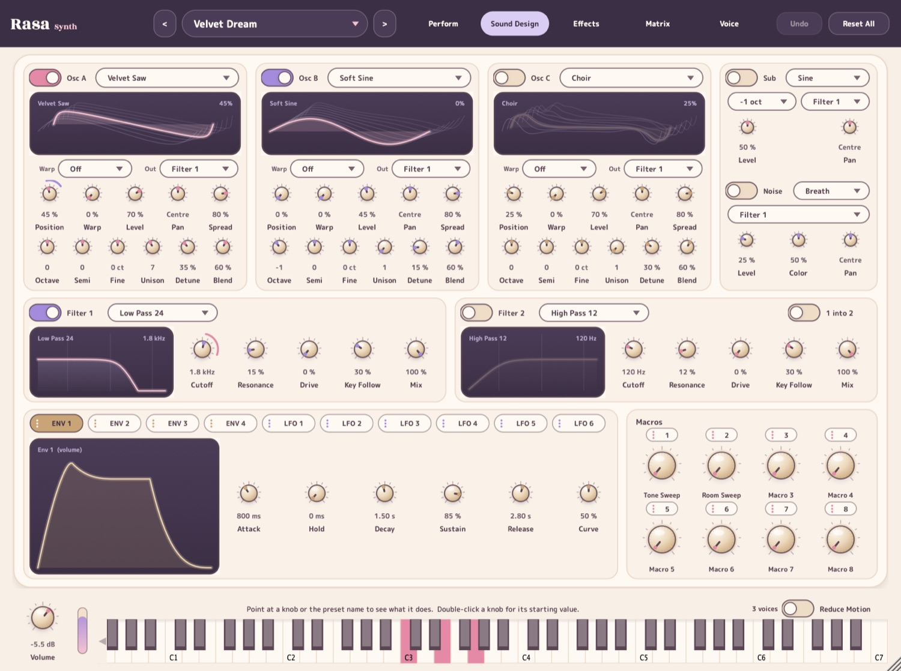

Rasa
Wavetable synth
A soft synth with more than 300 sounds, browsed by the feeling they give. Rasa is the idea, from Indian performance, that a performance exists to give its listener a feeling.
- Three wavetable oscillators, plus sub and noise
- Two filters, four envelopes, six LFOs and a modulation matrix
- Ten built-in effects